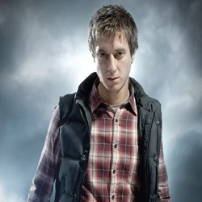

| Home | The Doctors | The Companions | The Villains |
|
|||
|
[
Rory Williams HomepageRory Williams is In love with Amy Pond from his teens, Rory Williams became a nurse to try and compete with (what he thought was) her made-up friend, the Doctor. When the Doctor turned out to be real, there was initially some friction, but the two became good friends. Rory had a turbulent time in the TARDIS. He was killed by the Silurians and absorbed into a crack in time, before being resurrected as an Auton, who then killed Amy. After breaking his programming, he stood watch over her tomb in the Pandorica for 2000 years. When reality was restored, Rory ceased to be an Auton and returned to human form. While aboard the TARDIS, he and Amy became parents to Melody. Sent back in time to 1938 by a Weeping Angel, Rory lived a happy life with Amy. Their adopted son, Anthony Brian Williams, visited Rory’s father Brian in 2012, bringing a heart-breaking goodbye note from Rory. |